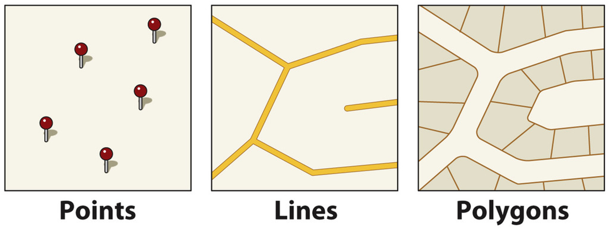
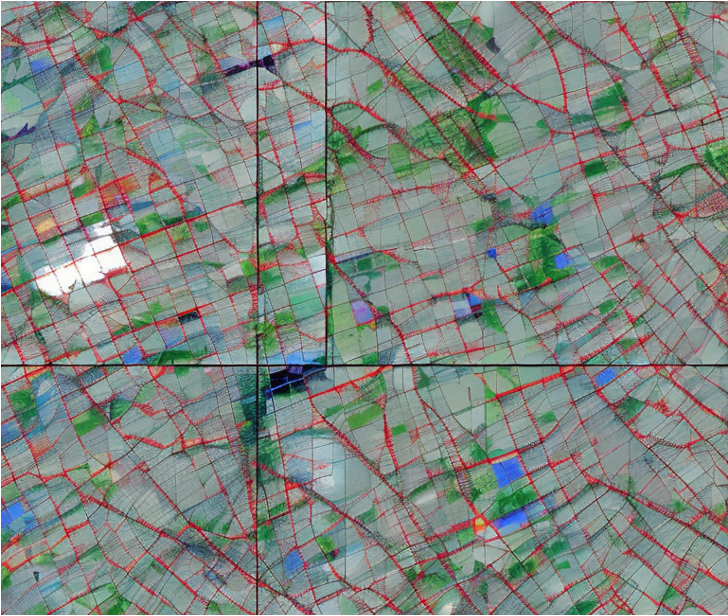
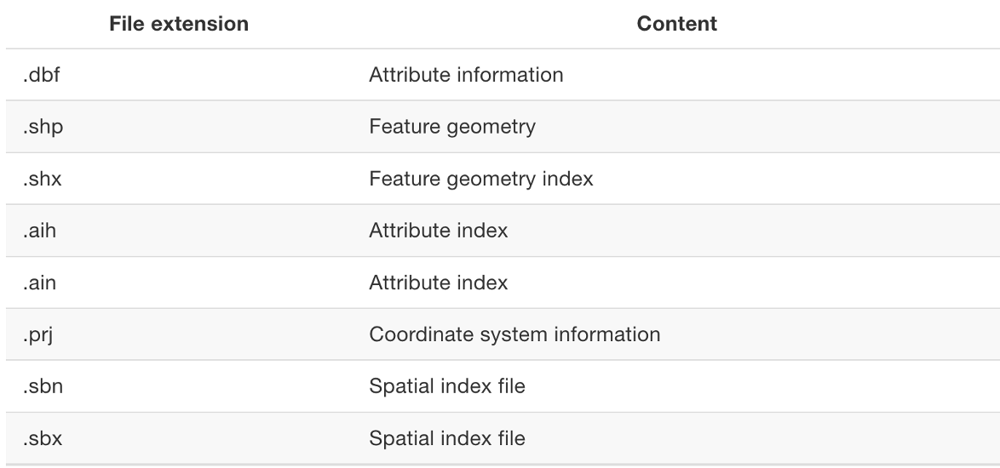
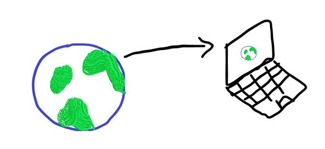
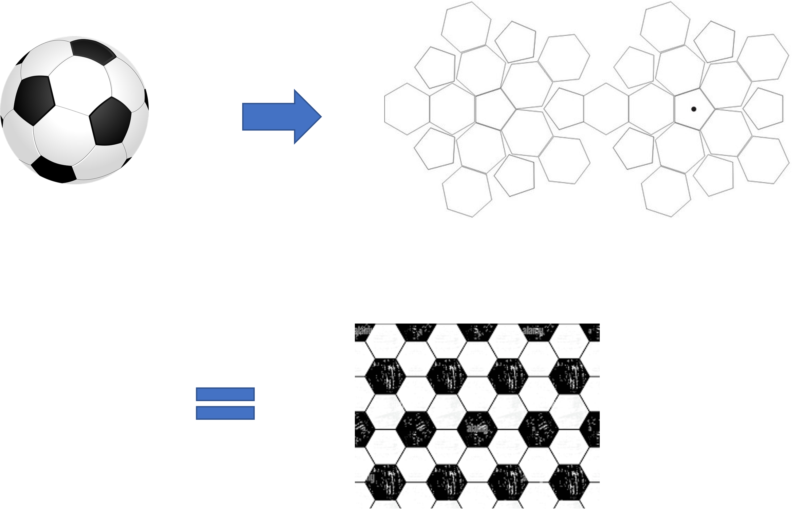
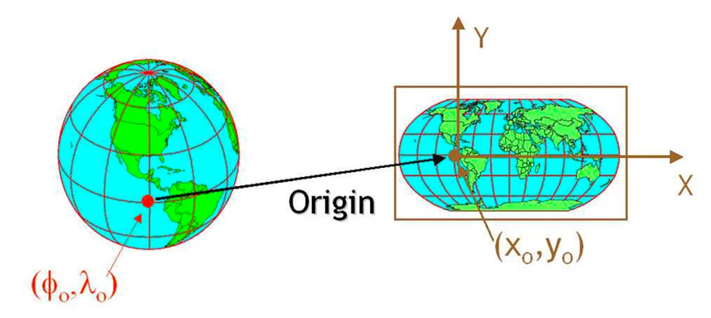

Pandas melt() function is used to change the DataFrame format from wide to long.
It’s used to create a specific format of the DataFrame object where one or more columns work as identifiers.
All the remaining columns are treated as values and unpivoted to the row axis and only two columns – variable and value.
We can use pivot() function to unmelt the output DataFrame back to the original data frame.
Melt and Cast
df = pd.DataFrame({'City': ['Auckland', 'Wellington', 'Christchurch'],'Jan_Temp': [25, 22, 20],'Feb_Temp': [24, 21, 19],'Mar_Temp': [23, 20, 18]})print("Original DataFrame:")print(df)# Using melt to reshape the DataFramedf_melted = pd.melt(df, id_vars=['City'], var_name='Month', value_name='Temperature')print("\nMelted DataFrame:")print(df_melted)
Data Vis
import seaborn as snsimport matplotlib.pyplot as plt# Set a clean stylesns.set(style="whitegrid")# Plotplt.figure(figsize=(10, 6))sns.lineplot(data=df_melted, x='Month', y='Temperature', hue='City', marker='o')# Add titles and labelsplt.title('Monthly Temperatures Across Cities', fontsize=16)plt.xlabel('Month')plt.ylabel('Temperature (°C)')plt.xticks(rotation=45)plt.legend(title='City')plt.tight_layout()# Show plotplt.show()
What is GIS
Graphical Information Systems:
Computer system for capturing, storing, checking, and displaying data related to positions on Earth’s surface
What is GIS
All data in GIS are ‘georeferenced’ meaning it has both;
Attribute (what it is)
Location (where it is, a known location)
GIS examples questions
Here are just some of the questions that GIS allows us to explore with crime data.
Where are the most vulnerable communities located?
Why do crimes occur in one area and not the other
How do offenders travel to the crime location?
Where are there more or less stop and search than we would expect in relation to the distribution of crime?
Reference vs Thematic Maps
Reference Maps: used to communicate location on more static data points
To ‘pin point’ data on a map
Descriptive
Thematic Maps: used to highlight a spatial relationship
To ‘study a theme’ within a map
Explanatory
Reference vs Thematic Maps
Map of New Zealand
Cartogram of the Africa
Rail Maps
How do we class Rail maps?
Reference maps because… They show the location of different tube stations, and the location of each tube line
Thematic maps because… They can be used to predict life expectancy, poverty and median house prices
Other cases
Scenario 1: The visualisation of road networks to improve road safety measures are a type of ?
Scenario 2: The visualisation of the earth’s surface, showing its elevation, is a type of
Scenario 3: Navigation tools such as Google maps or City-Mapper can be classed as
What is Geospatial Data?
Geospatial data (or spatial data in particular areas in the world) is a data frame that contains information about a specific location, which can be analysed to better understand that location. GIS enables this spatial data to be processed and analysed.
Two types: Vector and Raster
Vector and Raster
Vector: points, lines and polygons

Raster: Imagery or satellite data that are formed from a grid of pixels.

GIS Data Management
GeoTiff files are commonly used for raster data
Shapefile files are commonly used for vector data. Here’s a file extension…

Which data to use
Vector datasets and methods dominate the social sciences because human settlements and processes tend to have discrete borders (e.g., transport)
Raster datasets and methods dominate many environmental sciences because of the reliance on remote sensing data
Don’t forget about me!
GeoJSON (.geojson / .json) – Web-friendly, lightweight format for encoding geographic data structures.
KML/KMZ – Used primarily in Google Earth; KMZ is a zipped KML.
GPKG (GeoPackage) – A modern SQLite-based format supporting both vector and raster data.
File Geodatabase (GDB) – ESRI’s proprietary format allowing complex datasets and relationships.
CSV + coordinates – Plain text tabular data that can be georeferenced using lat/lon columns.
DXF/DWG – CAD files that can be converted to GIS-compatible formats.
GPX (GPS Exchange Format) – Typically used for GPS data (routes, tracks, waypoints).
MapInfo TAB / MIF – Formats used in MapInfo software
Uses xarray.Dataset and DataArray; ideal for NetCDF & multi-band rasters
Projection Methods
Moving from the 3D to the 2D

Football example

Distortion
The misrepresentation of…
Area
Shape
Distance
Direction of points
Distortion
Cylindrical
Conical
Planar
Web Mercator vs Gall-Peter Projection
So how do we project maps?

Coordinate Reference Systems (CRS)
The move from the 3D to the 2D is done with the help of CRS
Every place on earth is specified by three numbers (i.e. Latitude, longitude and Altitude)
Geographic Coordinate System vs Projected Coordinate Systems
CRS example
Spatial Relations in GIS
Spatial relations refer to the ways in which different locations, areas, or objects are situated in relation to each other on the Earth’s surface.
Spatial analysis in GIS
Spatial analysis refers to studying entities by examining, assessing, evaluating, and modelling spatial data features
Choropleth & point pattern maps
Spatial Autocorrelation
Spatial Interpolation
Hotspot maps
Modifiable Arial Unit Problem (MAUP)
MAUP refers to the cartographic representation of data whose attributes are significantly influenced by the spatial scale used
Two key Aspects:
Scale Effect: Changing the size of the spatial units (e.g., from neighbourhoods to districts) can alter statistical results, such as means or totals.
Zoning Effect: Altering the shape or configuration of spatial units, even if the scale remains constant, can also impact results.
Scale Effect
Zonal Effect
Reading and Writing Spatial Data
Reading Data
Use gpd.read_file() to read various spatial data formats (e.g., Shapefiles, GeoJSON)
import geopandas as gpd nzpop = gpd.read_file('path_to_file.shp')
Writing Data
Use gpd.to_file() to write GeoDataFrames to different formats
nzpop.to_file('path_to_save_file.shp')
Analysing vector data with GeoPandas
import geopandas as gpdcountries = gpd.read_file("./data/ne_110m_admin_0_countries")countries.head()
iso_a3 name continent pop_est gdp_md_est geometry
AFG Afghanistan Asia 34124811 64080 POLYGON ((61.21082 ...
AGO Angola Africa 29310273 189000 MULTIPOLYGON (((23.9...
ALB Albania Europe 3047987 33900 POLYGON ((21.02004 ...
ARE UAE Asia 6072475 667200 POLYGON ((51.57952 ...
ARG Argentina S. America 44293293 879400 MULTIPOLYGON (((-66...
...
type(countries)
geopandas.geodataframe.GeoDataFrame
What is a geodataframe
Just like a DataFrame but with a new, special geometry column:
Filter the data frame based on a boolean selection:
# Is the country name NZ?is_NZ = countries["name"] =="New Zealand"is_NZ
# Get the row with USANZ = countries.loc[is_NZ]NZ
Squeeze
The squeeze() function does just one it sounds like: if you have a DataFrame with only one row, it will “squeeze” the row dimension by removing it, returning just a Series object:
NZ.squeeze().geometry
# SqueezeNZsqueezed = NZ.squeeze()# Print out the typesprint("The type of NZ is: ", type(NZsqueezed))# OutputNZsqueezed
Coordinate Reference Systems (CRS)
Importance of CRS in spatial data
Using .crs to check CRS
Setting CRS during data read/write operations
print(countries.crs)
<Geographic 2D CRS: EPSG:4326>
Name: WGS 84
Axis Info [ellipsoidal]:
- Lat[north]: Geodetic latitude (degree)
- Lon[east]: Geodetic longitude (degree)
Area of Use:
- name: World.
- bounds: (-180.0, -90.0, 180.0, 90.0)
Datum: World Geodetic System 1984 ensemble
- Ellipsoid: WGS 84
- Prime Meridian: Greenwich
The EPSG=4326 CRS
EPSG 4326 is known as WGS 84 where x and y are longitude and latitude.
It is is the default coordinate system for GPS systems.
It’s also known as Plate Carrée or equirectangular
# Create a figure and axesfig, ax = plt.subplots(figsize=(10, 6))# Plot the countries on our axesax = countries.plot(ax=ax, facecolor="none", edgecolor="black")# Add a titleax.set_title("Equirectangular Projection");
Can we convert to other coordinate systems?
Use the df.to_crs() function! The most well-known projections can be specified by their EPSG code.
# Select the Point representing New York Citynew_york = cities.loc[cities["name"] =="New York"].geometry.squeeze()new_york
type(new_york)
shapely.geometry.point.Point
countries.contains(new_york)
# Find the country that contains New Yorkcountries.loc[countries.contains(new_york)]
USA = countries.loc[countries.contains(new_york)].squeeze().geometryUSAnew_york.within(USA)
Your turn
Use the same code to find Auckland
Spatial relationships: Functions
equals
contains
crosses
disjoint
intersects
overlaps
touches
within
covers
Spatial Join sjoin
merging attributes from two geometry layers based on their spatial relationship
Different parts of this operations:
The GeoDataFrame to which we want add information
The GeoDataFrame that contains the information we want to add
The spatial relationship we want to use to match both datasets (intersects, contains, within)
The type of join: left or inner join
Cities and countries
In this case, we want to join the cities dataframe, containing Point geometries, with the information of the countries dataframe, containing Polygon geometries.
To match cities with countries, we’ll use the within spatial relationship.
joined = gpd.sjoin( cities, countries, predicate="within", how="left", lsuffix="city", rsuffix="country",)
joined.head()
name_city geometry index_country iso_a3 name_country continent pop_est gdp_md_est
0 Vatican City POINT (12.45339 41.90328) 79.0 ITA Italy Europe 62137802.0 2221000.0
1 San Marino POINT (12.44177 43.93610) 79.0 ITA Italy Europe 62137802.0 2221000.0
2 Vaduz POINT (9.51667 47.13372) 9.0 AUT Austria Europe 8754413.0 416600.0
3 Lobamba POINT (31.20000 -26.46667) 152.0 SWZ Swaziland Africa 1467152.0 11060.0
4 Luxembourg POINT (6.13000 49.61166) 97.0 LUX Luxembourg Europe 594130.0 58740.0
Italy
As we can see above, the attributes of the cities (left) and countries (right) have been merged based on whether the city is inside the country.
name_city geometry index_country iso_a3 name_country continent pop_est gdp_md_est
0 Vatican City POINT (12.45339 41.90328) 79.0 ITA Italy Europe 62137802.0 2221000.0
1 San Marino POINT (12.44177 43.93610) 79.0 ITA Italy Europe 62137802.0 2221000.0
226 Rome POINT (12.48131 41.89790) 79.0 ITA Italy Europe 62137802.0 2221000.0
Plot
# Extract Italyitaly = countries.loc[countries["name"] =="Italy"]# Plotfig, ax = plt.subplots(figsize=(8, 8))italy.plot(ax=ax, facecolor="none", edgecolor="black")ax.set_axis_off()ax.set_aspect("equal")# Plot the first city in the joined data frame (Vatican City)# Use the same axes by passing in the ax=ax keywordax = cities_in_italy.plot(ax=ax, color="red")
overlay()
We can also perform the “join” operation on the geometries rather than just combining attributes.
The overlay() function combines geometries, e.g. by taking the intersection of the geometries.
Select all countries in Africa:
africa = countries.loc[countries["continent"] =="Africa"]africa.head()
iso_a3 name continent pop_est gdp_md_est geometry
1 AGO Angola Africa 29310273.0 189000.0 MULTIPOLYGON (((23.90415 -11.72228, 24.07991 -...
11 BDI Burundi Africa 11466756.0 7892.0 POLYGON ((29.34000 -4.49998, 29.27638 -3.29391...
13 BEN Benin Africa 11038805.0 24310.0 POLYGON ((2.69170 6.25882, 1.86524 6.14216, 1....
14 BFA Burkina Faso Africa 20107509.0 32990.0 POLYGON ((2.15447 11.94015, 1.93599 11.64115, ...
25 BWA Botswana Africa 2214858.0 35900.0 POLYGON ((29.43219 -22.09131, 28.01724 -22.827...
crs
What is the CRS?
africa.crs
<Geographic 2D CRS: EPSG:4326>
Name: WGS 84
Axis Info [ellipsoidal]:
- Lat[north]: Geodetic latitude (degree)
- Lon[east]: Geodetic longitude (degree)
Area of Use:
- name: World.
- bounds: (-180.0, -90.0, 180.0, 90.0)
Datum: World Geodetic System 1984 ensemble
- Ellipsoid: WGS 84
- Prime Meridian: Greenwich
Let’s transform to a CRS that uses metres instead of degrees (EPSG=3857)
cities_3857 = cities.to_crs(epsg=3857)# Create a copy of the GeoDataFramebuffered_cities = cities_3857.copy()# Add a buffer region of 250 km around all citiesbuffered_cities["geometry"] = buffered_cities.buffer(250e3)
Plot the difference of the two geometries
fig, ax = plt.subplots(figsize=(8, 8))# Calculate the difference of the geometry setsdiff = gpd.overlay( africa, buffered_cities, how="difference",)# Plotdiff.plot(facecolor="#b9f2b1", ax=ax)ax.set_axis_off()ax.set_aspect("equal")
Summary: 🌐 Core GIS Concepts
GIS = Attribute + Location — everything is georeferenced
Vector vs Raster:
Vector: points, lines, polygons
Raster: grids of pixels (e.g., satellite images)
Reference vs Thematic Maps:
Reference = location/navigation
Thematic = patterns/relationships
Projections & CRS:
Map distortion comes from projecting 3D → 2D
Use EPSG codes (e.g., 4326 for WGS84)
MAUP:
Scale Effect: unit size changes results
Zoning Effect: how units are drawn matters
Spatial relationships:
within, intersects, contains, touches, etc.
💻 Python Practicals with GeoPandas
Data Wrangling with pandas:
melt(), groupby(), and data visualisation using seaborn
Load Spatial Data:
gpd.read_file() for Shapefiles, GeoJSON, GPKG
Understand Geometry:
Access .geometry, filter with .loc[], squeeze() single-row GeoDataFrames
Work with CRS:
Check with .crs
Reproject using .to_crs(epsg=...)
Spatial Joins:
gpd.sjoin() to combine points with polygons based on spatial logic
Buffering & Overlay:
Use .buffer() for zones (e.g., 250km)
gpd.overlay() for geometric operations like difference, intersection
![]()